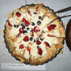
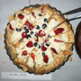

International Student Welcome Events
24th September - 2nd October, 2011
Welcome to Cambridge! Each year we organise a number of welcome events to give you a chance to meet
old and new
graduate students. Please see the table below for details of this year's welcome events!
Download
ISW Programme 2011 (PDF document - 493KB)
|
Date/Time |
Event |
Venue/Meeting point |
|
Sat 24 Sept 2.30 – 4.30 pm |
Punting |
Front Gate, Trinity College (punts will leave at 2.30pm) |
|
Sun 25 Sept 1.30 – 2.30 pm |
Really Useful Cambridge Tour |
Meet in front of the Round Church (at the corner of Bridge Street and Round Church Street) |
| Sun 25 Sept 2.30 - 4.30 pm | Traditional Cream Tea | Bateman Room, Gonville & Caius College |
|
Mon 26 Sept 7.30 – 10.30 pm |
ISW Cafe |
Graduate Union (TBC) |
|
Wed 28 Sept 7.30 – 10.30 pm |
Jacket Potato Party |
33 Victoria Park (or meet 7pm outside Cafe Uno, by Magdelene Bridge) |
|
Fri 30 Sept 7.30 – 10.30 pm |
International Dancing |
Henry Martyn Hall (Market Street; between Holy Trinity church and Crabtree & Evelyn) |
|
Sat 1 Oct 2.30 – 4.30 pm | Picnic |
Jesus Green (Meet by the tennis courts near Park Parade) |
|
Sun 2 Oct 1.30 – 2.30 pm |
Really Useful Cambridge Tour | Meet in front of the Round Church (at the corner of Bridge Street and Round Church Street) |
| Sun 2 Oct 2.30 - 4.30 pm |
Traditional Cream Tea | Senior Parlour, Gonville & Caius college |
|
Sat 8 Oct 7.30 – 10.30 pm |
Welcome Party |
236 Hills Road
|


 
